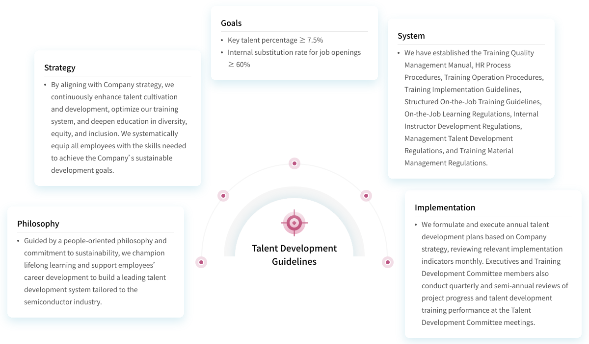
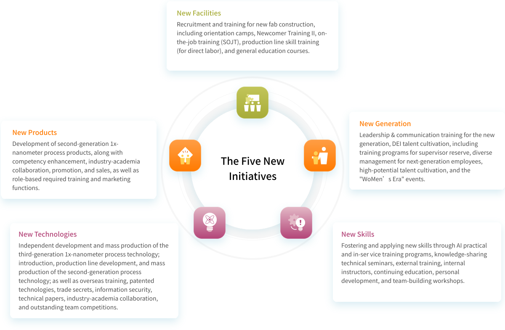
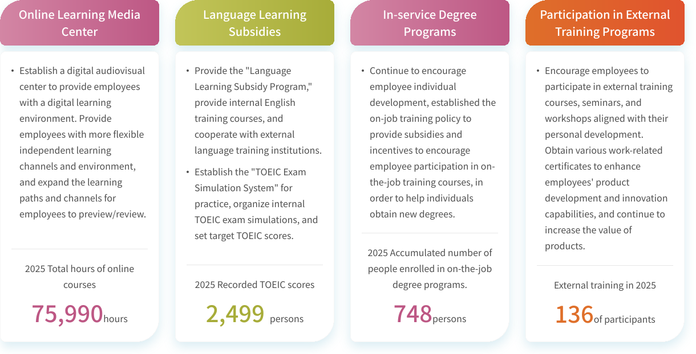
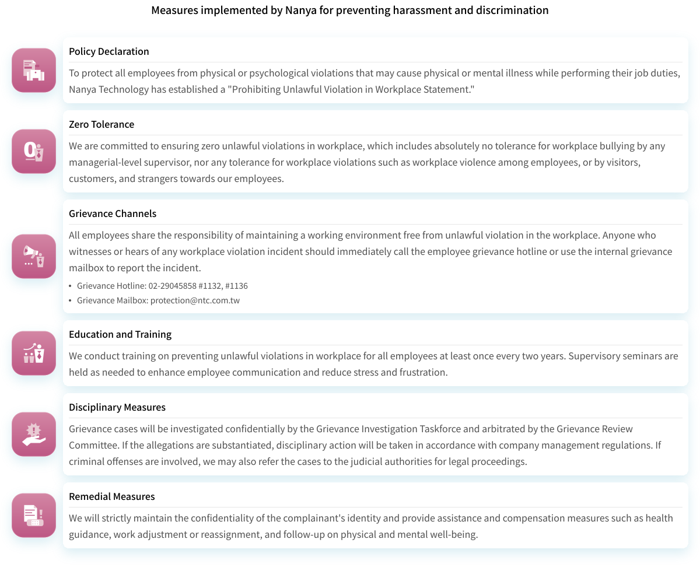
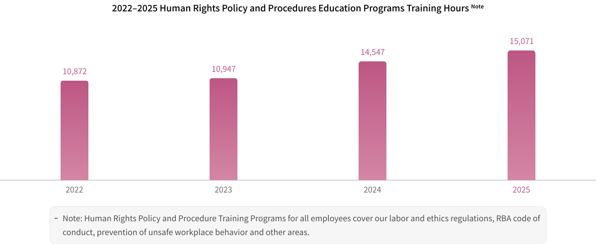
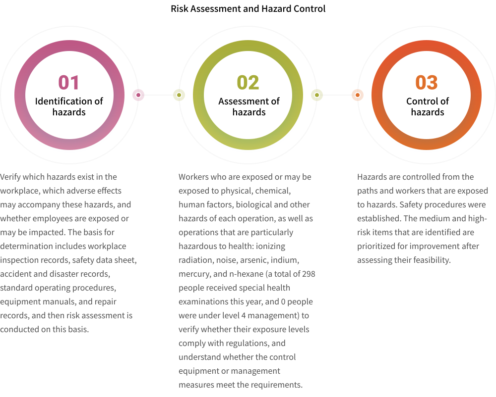

Talent An Employer Who Values Professional Talent
Talent is the cornerstone of innovation at Nanya Technology. We deeply value human rights, DEI, talent development, and a safe, supportive workplace. Our talent retention and cultivation programs help maintain our competitive advantages. Regular employee engagement surveys and an emphasis on a safe and friendly workspace allow us to build a secure working environment to achieve our sustainability goals.

- Numbers of semiconductor youth talents increase compared to 2024 31 %
- The retention rate of key talents is 95.4 %
- The return-to-work rate after parental leave was 86.36 %
Strategy and Performance of Material Topics
 Attracting and Retaining Talent
Attracting and Retaining Talent
Employees are not only the most important capital to Nanya, but also the key to supporting sustainable operations and innovative R&D within the Company. We strive to create a humane and comfortable office environment where new employees are subjected to systematic training and have access to diverse learning resources to help them quickly accumulate professional knowledge and skills for the semiconductor industry, and receive reasonable compensations in return. The Company also has an Employee Welfare Committee that organizes exciting and interesting recreation activities on a yearly basis to maintain employees' work-life balance as well as physical and mental well-being, and create a sustainably healthy workplace. We believe a competitive and stable workforce to be essential for improving the productivity and competitive advantage of the Company. We continue to design and provide an environment where talents may thrive. Through talent cultivation, we strive to become the best employer that looks after talents.
-
 Diversified recruitment policy
Diversified recruitment policyNanya Technology operations are distributed both domestically and internationally, so our employees' nationalities are highly diverse. In addition to employing Taiwanese nationals, in 2025, we employed individuals from 16 different nationalities, including Mainland Chinese, French, German, Japanese, American, Burmese, Italian, Kenyan, South Korean, Turkish, British, Indonesian, Malaysian, Vietnamese, Polish, and Cambodian, forming an internationally diverse workplace. We also align with and support the government's policy of encouraging the employment of people with disabilities, creating a friendly and diverse workplace. As of December 2025, we employed 37 individuals with disabilities in Taiwan, with a hiring rate of 1.00%. We will continue to employ a sufficient number of people with disabilities, providing suitable job vacancies to increase their employment opportunities and build a diverse and inclusive workplace.
-
 Stable workforce
Stable workforceThe capital and technology-intensive semiconductor industry requires not only substantial investment in plant and manufacturing equipment costing tens of billions of NTD, but also a large number of talented engineering professionals for Nanya Technology's production operations. In 2025, our Taiwan and overseas subsidiaries employed 3,835 regular employees (including 87 interns).The gender ratio among regular employees is approximately 2.66:1, with 2,786 male employees (72.65%) and 1,049 female employees (27.35%). In 2025, Nanya Technology had 33 female managers in mid- to senior-level management positions, accounting for 12.6% of top management. The average age of our employees is 38.86 years, with individuals aged 30 to 50 forming the primary workforce, accounting for 63.94% of total regular employees. The majority of employees hold bachelor's or master's degrees. All regular and non-regular employees are directly hired by the Company, with no part-time employees in 2025. 100% of our workforce is full-time.
-
 Attracting High-Quality Talent
Attracting High-Quality TalentIn 2025, a total of 459 individuals were hired in Taiwan, with approximately NT$610,000 invested in recruitment expenses, averaging NT$1,348 per hire. We employ diverse recruitment channels, including online advertisements and internal referrals, and posting talent recruitment information on our official social media platform to enhance company visibility. Furthermore, we strengthen industry-academia collaborations to target students, focusing on their technical and practical skills to proactively identify and recruit outstanding talent and overcome recruitment challenges. Our university recruitment events, themed Leading the Future with Your Intelligence, feature on-campus interactions, communication, and seminars, encouraging aspiring tech professionals to bravely pursue and realize their dreams as well as contribute to the development of Taiwan's semiconductor industry.
 Talent Retention
Talent Retention

Comprehensive Work Security
In response to industry changes and operational environment challenges, the Company continuously promotes fair and reasonable work practices, prioritizing the protection of employee work rights. Under the Formosa Plastics Group's human resource integration and utilization mechanism, we prioritize internal transfers over layoffs in terms of workforce adjustment. To motivate employees to achieve organizational goals and retain outstanding talent, we have established a quarterly incentive bonus system, encouraging employees to actively pursue business targets and share in the Company's success. In 2025, our voluntary turnover rate was 10.73% (with a male to female turnover ratio of approximately 3.8:1), an increase of 4.52% compared to 2024, which was 6.21%. This increase was primarily due to industry-wide conditions and market shifts that fueled higher voluntary attrition. To stabilize our workforce, starting in July 2025, we implemented several measures: an adjustment to the starting salary for entry-level employees with no experience, routine annual salary adjustments for all managers and employees, and structural salary adjustments for specific departments and professionals, aiming to ensure a happy and safe working environment for employees.
Offering Good Remuneration
To ensure the competitiveness of our overall remuneration package, our compensation and benefits system is planned and reviewed through local salary surveys and regional salary benchmarking associations, taking into account industry competitiveness, macroeconomic factors, and the sustainable operation of the corporate culture. Monthly salary includes base salary, meal/transportation/regional allowances, operational allowance, and efficiency bonus. Additionally, we provide variable remuneration such as bonuses, which are determined by individual employee performance and the achievement rate of organizational goals (or profitability), regardless of gender, to reward employees for excellent performance and share our success. In 2025, the average salary for full-time non-managerial employees was NT$1,614,000, a 17% increase compared to 2024. The median salary for full-time non-managerial employees was NT$1,356,000.
Remuneration Designed for Talent Retention
-
 Strong competitiveness of the Company's compensations
Strong competitiveness of the Company's compensations
- Nanya is a composition of Taiwan High Compensation 100 Index, indicating the strong competitiveness of the Company's compensations
-
 Bonus
Bonus
- Year-end bonus
- Festive bonus
- Dragon Boat Festival/Mid-autumn diligence bonus
- Grade bonus
-
 Long-term incentives
Long-term incentives
- Employee remuneration
- Employee stock option (applicable to all Nanya Technology employees, with stock options granted based on employee performance and role)
- Incentive bonus
- Annual salary adjustments
Employee Engagement Survey
The Human Resource Division of Nanya Technology conducts an annual Employee Engagement Survey for all employees to understand their level of recognition with the Company across aspects such as work, management, and organizational vision. This year's survey contains 28 questions across six aspects to collect employee feedback. The response rate for 2025 was 94%, with an average employee recognition score of 77%. Although it did not reach the target of 78%, it still represents a 4% increase compared to 73% in 2024. The main reason is that, since 2022, the DRAM industry has been affected by cyclical downturns, leading to weaker operating performance at Nanya Technology and tighter related benefits and bonus payouts. However, following the market recovery in the second half of 2025, various benefit programs have gradually been restored, and overall performance across the six key dimensions has improved for both male and female employees.
- The response rate in Employee Engagement Survey in 2025 94 %
- The average approval rate of employees in 2025 77 %
 Talent Empowerment
Talent Empowerment
Talent Development Guidelines

Five New Initiatives—New Technologies, New Products, New Facilities, New Generation, New Skills
Based on our vision and strategic goals, we have developed comprehensive short-, medium-, and long-term talent cultivation plans. Through our core initiatives, Talent Intelligence Hub; Smart Dream Factory; Co-learning Gathering-We Together, We Learn, We Grow; and the Five Innovations Program, we continue to strengthen the key capabilities needed to sustain long-term operations and drive innovation in R&D. Using a learning loop approach, it covers core competencies, organizational management, professional skills, and personal development. Following the introduction of the Five Innovations Program in 2024 to support the Company's strategic development, we continue to advance the initiative in 2025 under our Five New Initiatives. The program focuses on five areas: new technologies, new products, new facilities, new generation, and new skills. The corresponding employee training and development action plans are outlined below.

Diverse learning paths
Based on the Five New Initiatives, Nanya Technology provides employees with diverse learning models, promotes lifelong learning, and supports employee career development by offering a comprehensive and diverse range of learning channels to meet their varied learning needs.

 W.A.K.E Up Actions: Fostering a Friendly Workplace
W.A.K.E Up Actions: Fostering a Friendly Workplace
Beyond offering industry-competitive wages, Nanya Technology promotes an Employee Assistance Program (EAP), complemented by its WAKE Up Actions initiative, which provides comprehensive well-being support across four key pillars: Wellness, Assistance, Kindness, and Exercise. Our goal is to build a happy workplace and cultivate a group of joyful tech professionals.
-
 Wellness
WellnessCollaborating with the professional medical team at Chang Gung Memorial Hospital, we offer employee regular health examinations with frequencies exceeding legal mandates. We maintain an on-site Health Center staffed with legally compliant nurses and regularly scheduled visiting physicians.
-
 Assistance
AssistanceTo ensure a friendly and convenient working environment for our employees, the Company offers various welfare measures, including dining, accommodation, shuttle services, and parking. Our Employee Welfare Committee plans a wide range of annual benefits and activities. In 2025, a total of 10,387 employee attendances in Welfare Committee events.
-
 Kindness
KindnessTo facilitate the swift adaptation of new hires to their workplace, we have dedicated advisors who offer regular care, consultation, and guidance during their first two years, as well as to employees proactively seeking help, referred by supervisors, or on long-term sick leave. This reduces initial insecurity and accelerates their integration into the Company. Since 2019, we have also partnered with the Teacher Chang Foundation, an external professional psychological counseling organization, and our internal advisors offers a systematic approach to prevent and resolve employee issues, ensuring stable work quality and mental and physical well-being.
-
 Exercise
ExerciseThe multi-purpose sports and recreation center includes air track, basketball court, badminton court, KTV, pool table, table tennis, aerobics room, massage chair, and fitness equipment. o promote employee physical and mental well-being, Nanya Technology supports various sports clubs like running, basketball, table tennis, badminton, and softball clubs in organizing activities. Moreover, we launched the Sports Festival in 2019, inviting creative proposals from departments and clubs to utilize sports venues and facilities, aiming to achieve the combined benefits of promoting exercise, fostering creative thinking, and a vibrant company atmosphere. In 2025, a total of 15 proposals were approved, and 944 participants took part in the Sports Festival.
Employee Protection and Communication
To cultivate harmonious labor relations, promote cooperation between labor and management, and enhance employee welfare, we have established diverse and transparent communication channels. These mechanisms enable employees to express their views on fundamental working conditions, including health and safety and employee benefits. We actively seek to understand employee concerns and address issues promptly to foster positive labor-management communication. For reporting illegal activities, we have grievance channels, a whistleblower hotline, and a sexual harassment prevention hotline in place. Employees can also provide feedback on Company rules and regulations through the management system feedback channel. Employees may openly and fully communicate with management on matters related to public and private domains, working conditions, compensation and benefits, or personal opinions. The available communication channels are as follows:
-
Meetings
- Regular convention of employee meetings
- Administration contact window forum
- Production line workers' quarterly meetings
- Unscheduled department meetings
-
Two-way communication platforms
- Life Space
- Feedbacks and opinions
-
Electronic survey
- Satisfaction with catering service
- Satisfaction with activities
- Employee Engagement Survey
Zero-Tolerance for Harassment and Discrimination

 Employee Human Rights Protection
Employee Human Rights Protection

Nanya Technology places strong emphasis on labor rights and has established a Human Rights Policy as well as Labor and Ethics Policy . These policies adhere to international human rights standards, including the Responsible Business Alliance (RBA) Code of Conduct, SA8000 Social Accountability Standard, International Labour Organization (ILO) conventions, the Universal Declaration of Human Rights, the UN Guiding Principles on Business and Human Rights, and the General Data Protection Regulation (GDPR), along with relevant local laws. Nanya Technology promotes human rights risk assessment and management to build a supportive workplace that embraces inclusivity and diversity.

 Occupational Health and Safety
Occupational Health and Safety
Safe, Healthy Work Environment
Nanya Technology's Taiwan plant holds ISO 45001 Occupational Health and Safety Management System certification. A total of 4,203 personnel (3,835 employees and 368 non-employees), representing 97.29% of all personnel, were certified under the management system and audited by both internal and external organizations. The remaining personnel not included are all from overseas offices; formal employees of overseas subsidiaries numbered 117, accounting for 3.05%. Adhering to the RBA Code of Conduct and local regulations, we are committed to providing a safe, healthy, and high quality working environment for our employees and ensuring the safety of contractors, thus protecting the health and safety of all workers. By establishing management organizations, formulating management regulations and procedures, and implementing regular internal audits based on the PDCA management cycle, we drive various operations to effectively prevent incidents, striving to achieve our goal for zero occupational injuries and diseases.

Achievement in 2025
- The 19th Construction Golden Safety Award Excellent
- Provided safety and health training 7,987 participants
- Held emergency respond drills Strengthen response ability 55 drills

Consultation and communication between safety and health organizations and workers
The Occupational Safety and Health Committee meets monthly, exceeding regulatory requirements. Meetings are chaired by the Executive Vice President and attended by senior executives, department heads, and committee members, of whom 41.3% are employee representatives. The committee consults on and reviews the occupational safety and health management system, progress toward safety and health objectives, incident investigations, and the performance of safety and health initiatives. To strengthen communication on safety and health matters, the committee regularly reviews updates to local regulations and examines internal management policies, emergency response procedures, and environmental safety operating procedures.
In 2025, we conducted 45 internal audits, leading to 11 corrective action requests. Moreover, we foster bilateral communication through internal audits, and annual external audits are conducted by third-party organizations; indicators include the frequency of health examinations and testing items.
Explore the full story here
Download
 ESG News
ESG News
 Facebook
Facebook